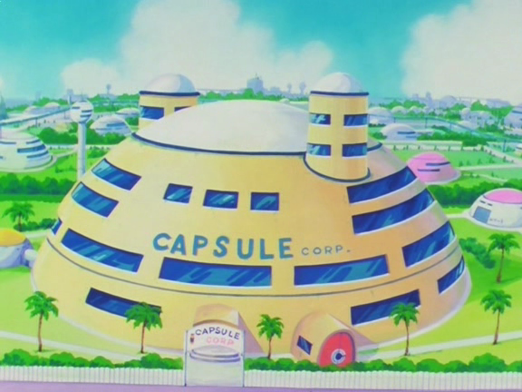
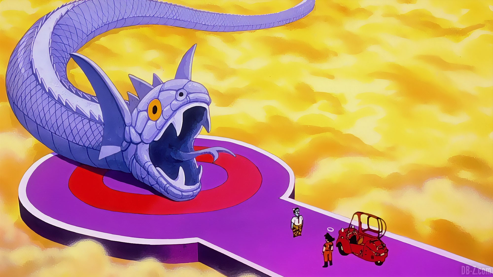
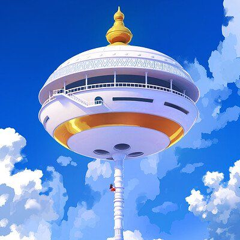
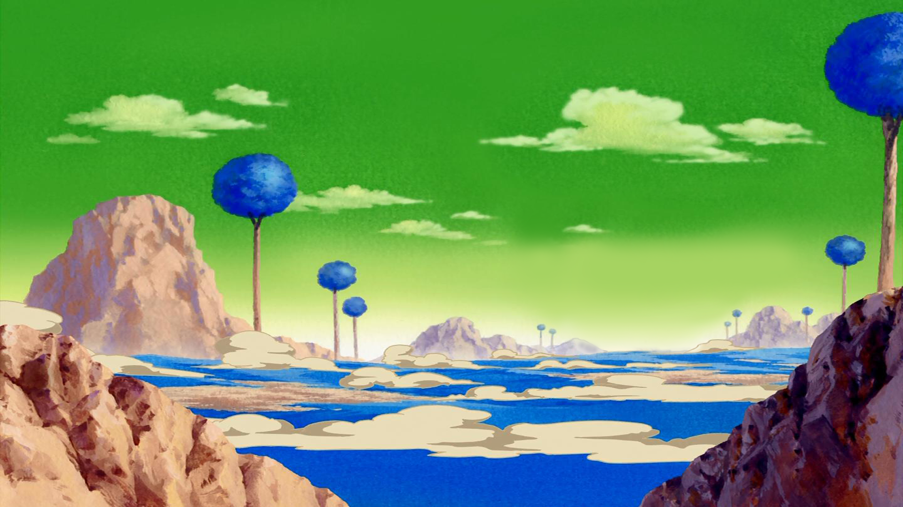

Les lieux emblématiques
Le palais de Dieu

Le Palais de Dieu est une gigantesque plate-forme lévitant dans les airs terrestres. Il se situe à plusieurs centaines de kilomètres au-dessus de la tour de Karin. C'est le lieu de résidence du Dieu de la Terre. D'ici, il peut observer tous les événements qui se déroulent sur Terre. C'est un lieu fréquemment visité par les personnages tout au long de la série, leur servant presque de quartier général.
La Capsule Corporation
La Capsule Corporation ou plus appelé Capsule Corp (dans l'anime) est une société multinationale qui est une des plus importantes au monde. L'entreprise appartient au Dr. Brief, le père de Bulma. Il est un scientifique, inventeur et aussi le plus riches homme sur Terre grâce à ses inventions. Sa popularité vient des Capsules révolutionnaires qu’il a créé et qui donnent aussi le nom à la société.
Le chemin du Serpent
Le chemin du serpent est un long chemin étroit et sinueux qui s'étend du Purgatoire à la planète de Maître Kaïô, et est la seule méthode pour y arriver (à part la téléportation). Cette longue route totalise environ un million de kilomètres. Lorsque Son Gokû s'apprête à le franchir, seul le roi Enma (Roi des Enfers) a été capable de rencontre maître Kaïô. Hormis l'incroyable longueur du Chemin du Serpent, plusieurs caractéristiques sont à noter. Sous les nuages jaunes se cachent en dessous l'Enfer. Plusieurs experts en arts-martiaux y seraient tombés par mégarde durant leur traversée.
La tour Karin
La tour Karin est une tour se trouvant sur Terre. Plus précisément, il s'agit d'un pilier gigantesque avec à son bout, un temple où réside maître Karin. Le pilier est si grand qu'il a fallu trois jours à Son Gokû pour arriver au bout lors de sa première ascension. La structure de la tour est très résistante, et même Tao Paï Paï n'arrive pas à l’ébrécher. Karin, l'ermite qui vit sur la tour, est la seule personne au monde à faire pousser les Senzus (Haricot magique permettant de retrouver de toute les blessures et redonne toute l'énergie). C'est d'ailleurs dans le temple situé tout en haut que se trouve l'unique arbre à Senzus. Cependant, selon ses dires dans le film Dragon Ball Z : L'incroyable plus fort contre le plus fort, pour mériter les Senzus il faut d'abord gravir la tour par ses propres moyens. C'est à dire que venir en volant, en se téléportant ne compte pas. Evidemment, Karin fera des exceptions pour Gokû et ses alliés.
Namek
La Planète Namek est une planète d'un système solaire éloigné. Elle est la planète d'origine du Tout-Puissant, de Piccolo Daimaô, ainsi que de Dende et des autres nameks connus. Namek a été détruite par Freezer au cours de son combat avec Son Goku. Le peuple namek a ensuite été relogé sur une nouvelle planète Namek, après avoir été hébergé sur Terre pendant près d'un an. Au moment où Son Gokû et les autres s'y trouvent, la planète n'habrite qu'une petite centaine de Nameks. Namek possède trois soleils, ce qui fait que la nuit n'y tombe jamais. Une année sur Namek est beaucoup plus courte que sur Terre : elle ne dure que 130 jours. En conséquence, les Dragon Balls de Namek se rechargent plus vite, comme on peut le voir lorsque Yamcha, Ten Shin Han et Chaozu sont ressuscités. Comme le constate Bulma à son arrivée, l'atmosphère de Namek, comme celle de la Terre, est en partie constituée d'oxygène.